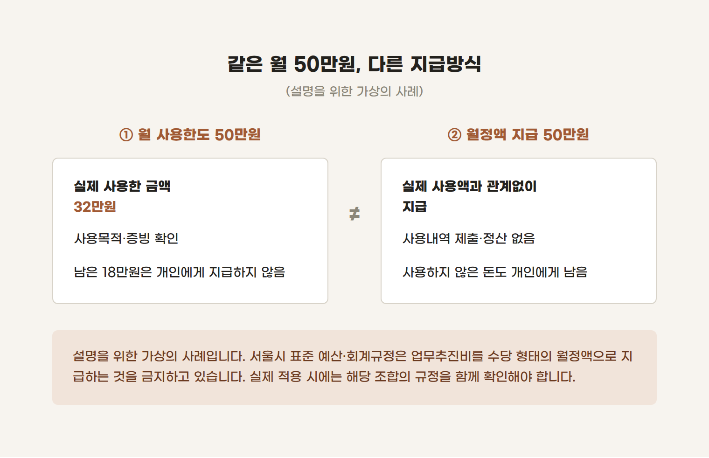

조합 업무추진비, 매달 정해진 금액을 받아도 될까?
조합 업무를 하다 보면 회의나 대외협의 등에 필요한 비용이 발생합니다. 매번 정산하는 일이 번거로워 일정 금액을 지급하고 알아서 사용하도록 하자는 생각이 들 때가 있습니다.
하지만 '월 50만원 한도에서 사용하는 것'과 '매달 50만원을 수당처럼 받는 것'은 다릅니다.
업무추진비를 이해할 때는 이 차이부터 살펴봐야 합니다.
1. 월 사용한도를 정하는 것과 월정액을 지급하는 것은 다릅니다
설명을 위한 가상의 사례입니다.
A조합은 업무추진비의 월 사용한도를 50만원으로 정했습니다. 이번 달에는 조합 업무와 관련해 32만원을 사용했고, 사용목적과 증빙을 남겼습니다. 남은 18만원을 임원에게 지급하지는 않았습니다.
반면 B조합은 실제 사용액과 관계없이 임원 개인계좌로 매달 50만원을 보냈습니다. 영수증을 제출하거나 남은 돈을 정산하는 절차도 없었습니다.
같은 '월 50만원'이라도 운영방식은 전혀 다릅니다.

서울시 표준 예산·회계규정 제39조는 업무추진비를 수당 형태의 월정액으로 지급하는 것을 금지하고 있습니다. 서울시의 규정 제정 안내에서도 이러한 취지를 설명하고 있습니다.
다만 이 글은 서울시 표준규정을 기준으로 설명합니다. 실제 조합에 적용할 때는 해당 지역의 기준과 조합이 채택한 정관·예산회계규정을 함께 확인해야 합니다.
2. 총회에서 예산을 승인받았어도 사용내역은 필요합니다
총회에서 승인한 예산인데도 문제가 되나요?
여기서는 지출할 예산이 있는지와 그 예산을 어떻게 집행하는지를 함께 봐야 합니다.
업무추진비 예산이 있다는 사실만으로 임원 개인에게 정액수당을 지급할 근거까지 마련됐다고 볼 수는 없습니다.
예산서에 '50만원 × 12개월'이라고 적혀 있더라도, 그것이 월별 사용예산을 계산한 것인지 개인에게 지급할 보수를 정한 것인지 확인해야 합니다.
업무추진비로 집행했다면 적어도 다음 내용은 설명할 수 있어야 합니다.
- 언제, 어디에서 사용했는지
- 어떤 조합 업무를 위한 지출인지
- 누구와 관련된 지출인지
- 얼마를 사용했고 어떤 증빙을 받았는지
카드전표에 음식점 이름과 금액만 남아 있다면 업무 관련성까지 설명하기 어려울 수 있습니다. 지출결의서 등에 회의나 협의 목적을 함께 적어두는 이유입니다.
3. '업무추진비'라고 적어도 세무상 급여가 될 수 있습니다
사용내역을 정산하지 않고 매달 일정 금액을 임원에게 지급했다면 세무처리도 살펴봐야 합니다.
소득세법 제20조는 근로 제공의 대가로 받는 보수·상여·수당 등을 근로소득으로 규정합니다. 같은 법 시행령 제38조제1항제1호도 판공비·교제비 등과 유사한 명목으로 받는 금액 중 업무에 사용된 것이 분명하지 않은 급여를 근로소득에 포함합니다.
따라서 장부에 업무추진비로 기재했더라도, 실질이 임원의 직무 수행에 대한 정액 보수라면 근로소득으로 보아 원천징수 등을 검토해야 할 수 있습니다.
반대로 매달 정산한다는 이유만으로 모두 급여가 되는 것도 아닙니다. 실제 조합 업무에 사용한 비용을 증빙에 따라 정산한 것인지, 사용 여부와 무관하게 개인에게 지급한 것인지가 중요합니다.
4. 급여로 신고하면 모두 해결되는 것은 아닙니다
이 지점에서 한 가지 더 구분해야 합니다.
그럼 업무추진비 대신 급여로 처리하면 되겠네요?
세무상 신고와 조합 내부의 지급근거는 별개의 문제입니다.
보수로 처리하려면 해당 임원에게 보수를 지급할 수 있는지, 정관과 보수규정은 어떻게 되어 있는지, 필요한 의결과 예산편성을 거쳤는지도 확인해야 합니다. 이미 지급한 돈을 급여대장에 반영하고 세금을 납부하더라도, 당초 지급절차의 문제가 자동으로 해소되는 것은 아닙니다.
그렇다고 정액으로 지급했다는 사실만으로 곧바로 횡령이나 전액 환수를 단정할 수도 없습니다. 실제 사용처와 지급근거, 적용규정을 확인해 판단해야 합니다.
5. 이미 정액으로 지급하고 있다면 어디부터 확인할까요?
먼저 최근 지급내역과 근거자료를 함께 펼쳐보는 것이 좋습니다. 예산서에는 어떻게 적혀 있는지, 어떤 의결을 거쳤는지, 개인계좌로 보낸 금액에 대해 사용내역을 받았는지 확인합니다. 남은 돈을 반환하거나 다음 정산에서 차감했는지도 살펴봐야 합니다.
그 결과에 따라 실제 업무비용, 정산이 필요한 금액, 보수 성격의 지급액 등을 구분하고 회계처리와 원천징수 누락 여부를 검토할 수 있습니다.
앞으로의 집행방식도 정리해야 합니다. 서울시 표준규정은 업무추진비의 법인카드·현금영수증 사용을 원칙으로 하고, 현금지출은 격려금·축의금·조의금 등 불가피한 경우로 제한합니다. 현금지출의 세부 기준도 조합 규정에서 확인해야 합니다.
업무추진비를 검토할 때 가장 먼저 볼 것은 지급명칭보다 실제로 어디에 사용했고, 어떻게 정산했는지입니다.
지난달 업무추진비 지급내역을 보면서 이렇게 확인해보시면 좋겠습니다.
이 금액은 조합 업무에 사용한 돈인가, 사용내역과 관계없이 개인에게 지급한 돈인가?
여기에 답할 수 있는 자료가 있는지부터 살펴보시기 바랍니다.
정비사업조합 기장·세무대리
조합 장부와 세금 신고, 믿고 맡길 곳을 찾고 계신가요? 장부기장·세무신고부터 결산자료 작성까지 함께합니다. 회계실사와 임직원 대상 예산·회계 교육도 진행합니다.
복잡한 회계·세무 업무, 조합에서 이해하기 쉽게 설명해드리겠습니다.
기장·세무대리·회계실사·강의 문의: kicpa.jjh@gmail.com
※ 서울시 표준 예산·회계규정을 바탕으로 작성한 일반적인 설명입니다. 구체적인 적용과 세무처리는 해당 조합의 규정, 지급대상 및 실제 사용·정산내용에 따라 달라질 수 있습니다. 회계실사는 법정 외부회계감사 및 행정기관 실태조사와 별도의 점검·자문업무입니다.
조종환 공인회계사·세무사